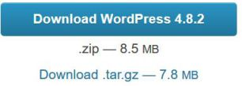

a. Installer WordPress.org
Rappel :
Cette partie fait référence au tutoriel sur Easyphp.
Méthode :
• Télécharger l'archive wordpress : https://fr.wordpress.org/

Copier l'archive dans le dossier « monpremiersite » (cf tuto Easyphp) ;
Décompresser l'archive dans ce dossier ;
Ouvrir le Dashboard EasyPhp :
« Messites »  ;
;
« monpremiersite »  ;
;
« wordpress »  .
.
Renseigner les champs comme indiquer et «valider » :
«Lancer l'installation » :
Choisir un identifiant et un mot de passe « fort » et votre adresse mèl;
« installer WordPress » :
« Se connecter » :
Remarque : Le dashboard WordPress s'ouvre :
Remarque :
 Sur « titre du site » et « ouvrir le lien dans un nouvel onglet »
Sur « titre du site » et « ouvrir le lien dans un nouvel onglet » donne un aperçu du site
donne un aperçu du site :
:
Une modification dans le premier onglet (tableau de bord), après actualisation du deuxième onglet, permet de visualiser cette modification.